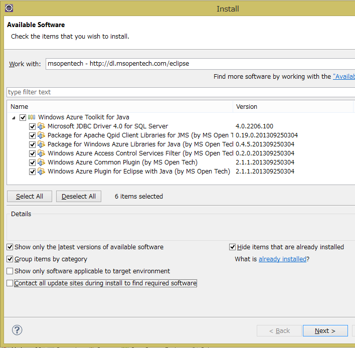
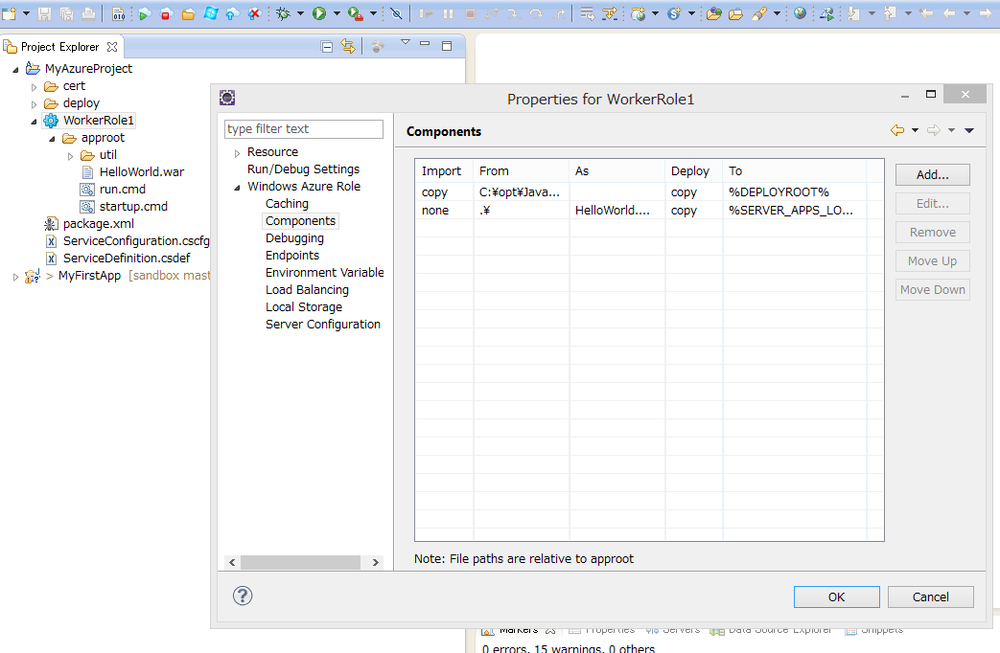

Windows Azure Tables の Breaking Changes 2013/11
2013/11/29 以下の内容は正式な日本語訳が出ています Windows Azure テーブルにおける重大な（互換性のない）変更
Azure Storage Team より、Windows Azure Table のJSONサポート準備のため Table の response が一部変更されている旨アナウンスされました。基本的に、HTTP、AtomPubの規格内の変更で互換性を保てるように最大限の努力をしているということですが、自前のカスタムパーサーを書いている場合などは問題になるかもしれません。
Windows Azure Tables Breaking Changes (November 2013) から変更点を紹介します。
変更点
- 新しいリリースでは、AtomPub response は、XML要素の間に改行、空白がありません。
- AtomPub XML Responce内のXML element（title、idなど）は、順番が変更される場合があります。
- HTTP HeaderのContent-Typeに”type” placeholder が追加されました。例えば, query の response (point query以外) は、content type に charset と application/atom+xmlに、 type=feed が追加されます 変更前: Content-Type: application/atom+xml;charset=utf-8 変更後: Content-Type: application/atom+xml;type=feed;charset=utf-8
- MIME type のセキュリティ リスクの削減のための新しいresponse header X-Content-Type-Options: nosniff が返されます。 参照： http://msdn.microsoft.com/en-us/library/ie/gg622941(v=vs.85).aspx
感想等
- 手元のアカウントで確認してみたら既に上記の通りに変更されていました。事前に予告が欲しいです。
- 改行、空白が無くなった件は、今までのは、「XMLが element毎に改行されインデントされてるようなフォーマットで人が読むわけではないのに転送データ量が増えてMOTTAINAI」と思ってたので妥当な変更な気がします。これは、普通のXML parsersを通していれば問題になることは無さそうですし。
- XML element の順番の件は引っかかるとちょっと面倒ですが、元々AtomPubの仕様に沿ったものなので無茶な話ではないと思います。
- AtomPub内のXML elementの順番に関しては、 RFC 4287 The Atom Syndication Format 日本語訳 が参考になります。feedの中のelementはどんな順番で出てきても良いことになっていますね。
- HTTP ヘッダーの変更は、ここまでパースしていることがあまり無いような気がするので、「影響はあまり無いのかな」という気がします。
json対応に向けて着々と進んでいるのは、とても嬉しいです。
Azure SDK for Java 0.4.6 long値のfilter BUG
Azure SDK for Java 0.4.6 では、Azure TableのプロパティをLong値で$filterした場合に、URL展開で数字の末尾の’L’が付かないという不備があります。その結果、MAX_INTより大きな値を条件にするとサーバーの処理がエラーになってしまいます。
この問題に気が付いたのは、0.4.4で、0.4.6でもまだ修正されていません。
修正して、Pull Requestを投げています。(2013/10/13)
#413 Long value filtering has error when value more than MAX_INT

修正内容
edmType が、EdmType.INT64の場合に、値のpostfixに’L’を付けるように変更しました。
元の仕様
どこからこの’L’が出てきたかという話をチョットします。 Azure Table REST APIは、OData の仕様に準拠しているのでリテラルの書式などはそれを見ると書いてあるはずです。ODataのPrimitive Data Typesでは、64bit整数は下記のように定義されていました。’L’ですね。
| Primitive Types Literal Form Example | |||
|---|---|---|---|
| Edm.Int64 Represents a signed 64-bit | integer value | [-] [0-9]+L | Example 1: 64L Example 2: -64L |
odata.org 6. Primitive Data Types より
念のため他のデータ型の実装も確認すると、Azure Tableでサポートされているデータ型でリテラル表記に癖があるEdm.Guid, Edm.DateTimeのあたりですは問題なさそうです。
Windows Azure Plugin for Eclipse with JavaとPlay Framework 2.1
Pyay Framework 2.1のアプリを作ってWindows AzureにDeployするまでを簡単に流します。Java, Play Frameworkに付いてある程度知識があって、Windows Azureを使ってみようという人を前提としています。
必要環境
確認は下記の環境で行いました。
- Windows 8
- Java Developer Kit (JDK), v1.7
- Eclipse IDE for Java EE Developers Kepler
- Windows Azure SDK 2.1
- Play Framework 2.1
Windows Azure Plugin for Eclipse with JavaとPlay Framework 2.1の開発環境としては、JDKは1.6以降、Eclipseは、 Indigo 以降がサポートされています。Windows Azure SDKは最新（2.1）が必要です。Play Frameworkに関しては2.1.5で試しましたが、他のバージョンとの互換性は確認していません。
Windows Azure SDK 2.1のインストール
Windows Azure SDK 2.1は、Web Platform Installer 4.6経由で入れるのがお勧めです。少し慣れないと分かりづらいので説明します。
Web Platform Installerを起動して、右上の検索ボックス①に azure sdk 2.1 と入力して改行すると検索結果が表示されます。その中の Windows Azure SDK 2.1 ② を「インストールする」して下さい。（画面はインストール後になってしまっているのですが、右端のインストールボタンを押すとインストール候補として選択されます）Visual Studio用のツールなど複数表示されますが、今回必要なのは、 Windows Azure SDK 2.1 だけです。
画面下の「インストール」ボタン③を押すと処理が始まります、この時に必要な依存関係も同時にインストールされます。

- Web Platform Installer 4.6 は、 Microsoft Web Platform Installer 4.6 からインストールできます。
もっと簡単な方法
This plugin requires Windows Azure SDK 2.1. This can be downloaded using the Web Platform Installer (WebPI) 経由で Windows Azure SDK 2.1 をインストールするplugin(exe)も配布されています。 http://go.microsoft.com/fwlink/?LinkID=252838 このリンク先さからダウンロードされるEXEを起動するとSDKのインストールが自動的に始まります。どちらの方法でインストールしても同じものが入ります。
Windows Azure Plugin for Eclipse with Java (by Microsoft Open Technologies)
次に、Microsoft Open Technologiesが作っている Windows Azure Plugin for Eclipse with Java を入れます。現在(2013/10/15)の最新版は、2.1.1です。 プラグインのインストールは、通常のものと同じに、Help メニューのInstall New Softwareから行います。
レポジトリとして、 http://dl.msopentech.com/eclipse を追加すると、 Windows Azure Toolkit for Java が表示されます。
必要に応じてライブラリを選択してください。今回はとりあえず、全部選択します。
サポートされているライブラリの種類
Windows Azure Plugin for Eclipse with Javaが、EclipseのUIとツールを提供するもので、その他のものはAzureのAPIをラップしたクラスライブラリです。
- Microsoft JDBC Driver 4.0 for SQL Server: SQL Database 用のコンポーネント
- Package for Apache Qpid Client Libraries for JMS (by MS Open Tech): Azureのメッセージングサービス向けのJMS client library （Apache Qpid project が元になっています）
- Package for Windows Azure Libraries for Java (by MS Open Tech): このコンポーネントは、Windows Azure でスケーラブルなクラウドコンピューティングを実現するためのライブラリを提供
- Windows Azure Access Control Services Filter (by MS Open Tech): このコンポーネントはWindows Azure ACS を使った認証アプリケーション向け
- Windows Azure Common Plugin (by MS Open Tech): 他のこのコンポーネントとの共通コンポーネント
- Windows Azure Plugin for Eclipse with Java (by MS Open Tech): このコンポーネントは、project configuration logic、the publish-to-cloud wizard、と user interfaceを含む
インストールに異常に時間がかかる場合は、Contact all update sites during install to find required software のチェックを外してみてください。
ここまでの内容は、 Installing the Windows Azure Plugin for Eclipse with Java (by Microsoft Open Technologies) に詳しく書いてありますので、そちらも参照してください。
Play Frameworkのプロジェクト作成からEclipseへの取り込へ
動作確認のためにPlay Frameworkのプロジェクトを作成して、Eclipseへ取り込みます。
MyFirstAppという名前で、play frameworkのアプリを作ります。今回は全くコードは書かないので関係ありませんが言語はJavaを選択します:
$ play new MyFirstApp
_ _
_ __ | | __ _ _ _| |
| '_ \| |/ _' | || |_|
| __/|_|\____|\__ (_)
|_| |__/
play! 2.1.5 (using Java 1.7.0_25 and Scala 2.10.0), http://www.playframework.org
The new application will be created in C:\Users\Takekazu\Documents\GitHub\sandbox\java\play002\MyFirstApp
What is the application name? [MyFirstApp]
>
Which template do you want to use for this new application?
1 - Create a simple Scala application
2 - Create a simple Java application
> 2
OK, application MyFirstApp is created.
Have fun!
eclipseのプロジェクトを作ります。先ほど作成したアプリのディレクトリに移動してeclipseのプロジェクトを作成します。 普通の開発ならば、 eclipse with-source=true の方が良いかもしれませんが、今回はダウンロード時間の節約でソースは持ってきません:
$ cd .\MyFirstApp
$ play
[info] Loading project definition from C:\Users\Takekazu\Documents\GitHub\sandbox\java\play002\MyFirstApp\project
[info] Set current project to MyFirstApp (in build file:/C:/Users/Takekazu/Documents/GitHub/sandbox/java/play002/MyFirstApp/)
_ _
_ __ | | __ _ _ _| |
| '_ \| |/ _' | || |_|
| __/|_|\____|\__ (_)
|_| |__/
play! 2.1.5 (using Java 1.7.0_25 and Scala 2.10.0), http://www.playframework.org
> Type "help play" or "license" for more information.
> Type "exit" or use Ctrl+D to leave this console.
[MyFirstApp] $ eclipse
[info] About to create Eclipse project files for your project(s).
[info] Updating {file:/C:/Users/Takekazu/Documents/GitHub/sandbox/java/play002/MyFirstApp/}MyFirstApp...
[info] Done updating.
[info] Compiling 4 Scala sources and 2 Java sources to C:\Users\Takekazu\Documents\GitHub\sandbox\java\play002\MyFirstApp\target\scala-2.10\classes...
[info] Successfully created Eclipse project files for project(s):
[info] MyFirstApp
[MyFirstApp] $ exit
AzureのDeploy用のパッケージ(cspkg)に入れるためアプリの配布用zipを作成します:
$ play dist
[info] Loading project definition from C:\Users\Takekazu\Documents\GitHub\sandbox\java\play002\MyFirstApp\project
[info] Set current project to MyFirstApp (in build file:/C:/Users/Takekazu/Documents/GitHub/sandbox/java/play002/MyFirstApp/)
[info] Packaging C:\Users\Takekazu\Documents\GitHub\sandbox\java\play002\MyFirstApp\target\scala-2.10\myfirstapp_2.10-1.0-SNAPSHOT-sources.jar ...
[info] Done packaging.
[info] Generating Scala API documentation for main sources to C:\Users\Takekazu\Documents\GitHub\sandbox\java\play002\MyFirstApp\target\scala-2.10\api...
[info] Wrote C:\Users\Takekazu\Documents\GitHub\sandbox\java\play002\MyFirstApp\target\scala-2.10\myfirstapp_2.10-1.0-SNAPSHOT.pom
[info] Packaging C:\Users\Takekazu\Documents\GitHub\sandbox\java\play002\MyFirstApp\target\scala-2.10\myfirstapp_2.10-1.0-SNAPSHOT.jar ...
[info] Done packaging.
model contains 17 documentable templates
[info] Scala API documentation generation successful.
[info] Packaging C:\Users\Takekazu\Documents\GitHub\sandbox\java\play002\MyFirstApp\target\scala-2.10\myfirstapp_2.10-1.0-SNAPSHOT-javadoc.jar ...
[info] Done packaging.
Your application is ready in C:\Users\Takekazu\Documents\GitHub\sandbox\java\play002\MyFirstApp\dist\myfirstapp-1.0-SNAPSHOT.zip
[success] Total time: 8 s, completed 2013/10/15 14:57:13
$
この時に、 Your application is ready in の行に表示される zip ファイル名（以下 dist zip名）をメモして置いて下さい、この前で使います。
eclipseを起動して、プロジェクトをimportします。

これで、サンプルのplay frameworkのプロジェクトの作成とビルドが終わりました。この先は、Azure 用のプロジェクトを作成に入ります。
Azure 用のProjectの作成
ツールバーの New Windows Azure Deployment Project を押します。

New Windows Azure Deployment Projectの設定POPUPが開きます。Project Nameを入れます。今回は、MyAzureProjectにしました。例では、default locationを変更してplay frameworkのプロジェクトの横のディレクトリに持ってきていますが、プロジェクトの場所はどこでも構いません。

Nextを押すと、JDKの設定に移ります。Emulator deployment と書いてある部分が、Emulatorを使った場合に利用されるJDKの設定で、Cloud deployment の部分がクラウド上（Azure環境）で使われるJDKの設定です。Deploy my local JDKを選択すると、Emulatorで使うように設定したものを自動的にCloudにアップロードしてクラウド上でも同じものを使うようになります。 今回は、ローカルのJDK 1.7を両方で使うように設定しています。この画面ではJDKの設定しかしません。SeverとApplicationは何も触らずにFinish のボタンを押します。

下記のような内容のプロジェクトが作成されます。

プロジェクトのWorkerRole1へMyFirstAppのdist zipを追加する
WorkerRole1を選択してプロパティを開き、Windows Azure RoleのTreeを開いてComponentsを選びます。コンポーネントリストにHelloWorld.warがありますが、不要なのでremoveします。その後Addを押してMyFirstAppのdist zipを追加します。
「Windows Azure Role Component」のpopupをでは、Import into packageのFrom Pathの部分に、dist zip のフルパス名を入れます。Methodは、copyを選択、As Nameは、dist zipのファイル名入れます（ここは、From Pathのファイル名部分がデフォルトで入力されるはずです）その下の、Deploy from packageの設定は、Methodをunzip、To directoryを.にしてください。今回

環境変数の追加
dist zip名をRoleの実行タスクに渡す良い方法が無かったので、環境変数を使います。環境変数名ZIP_NAMEにdist zipのbase名(今回は、 myfirstapp-1.0-SNAPSHOT )を定義します。

EndPointを変更
play frameworkアプリのデフォルトの待ち受けポートが9000なので、EndPointを9000に変更します。publicで定義されているのがAzure のload brancer がインターネット上で公開しているポート番号で、privateがAzure インスタンスでアプリが待ち受けているポート番号です。play frameworkアプリのデフォルトの待ち受けポートが9000なので、EndPointを9000に変更します。Azure Load brancerがこの定義に基いてポート変換を実行します。

scriptの変更
MyAzureProject/WorkerRole1/approotにあるstartup.cmdとrun.cmdを下記のように変更します。
startup.cmd:
del /q run_body.cmd
powershell -ExecutionPolicy RemoteSigned -f replace.ps1 run_body.cmd.template > run_body.cmd
run.cmd:
rem @ECHO OFF
set _SLEEPLENGTH=15000
set _FILENAME=run_body.cmd
@REM Create a temporary sleep script in VBScript
echo WScript.sleep(%_SLEEPLENGTH%) > %Temp%\_mysleep.vbs
:Loop
if exist %_FILENAME% (goto:StartToRun)
cscript /Nologo %Temp%\_mysleep.vbs
goto:Loop
del %Temp%\_mysleep.vbs
:StartToRun
call %_FILENAME%
replace.ps1と、run_body.cmd.templateの2つファイルを追加します。
replace.ps1:
cat $args[0] | % {$l = $_ -creplace '__JAVA_HOME__',"$Env:JAVA_HOME"; "$l" } | % {$l = $_ -creplace '__ZIP_NAME__',"$Env:ZIP_NAME"; "$l" }
run_body.cmd.template:
set JAVA_HOME=__JAVA_HOME__
set ZIP_NAME=__ZIP_NAME__
set PATH=%JAVA_HOME%\bin;%PATH%
setlocal
set d=%~dp0
set d=%d:\=/%
java %* -cp "%d%/%ZIP_NAME%/lib/*;" play.core.server.NettyServer %d%
Emulatorでの実行
これで準備ができました。 Run In Windows Azure Emurator` を押してEmulatorでの実行します。成功すると、80と9000のポートで結果を見ることができます。80はAzure SDKに付属のCompute Emulator経由で、9000はPlay Frameworkの待受を見ていることになります。また、EndPointの設定で80にしていますが、Compute Emulatorが起動時に、既に80が使われていた場合は順次ポート番号をインクリメントしていき空いているポートを利用します。

Emulatorの管理画面が同時に起動します。Windows Azure Compute Emurator のウインドウを開いてWorkerRole1の0を選択すると、コンソール画面が表示されます。

Azure環境へのDeploy
Publish to Windows Azure Cloudを押してAzure環境にDeploy します。必要に応じて、StorageとCloud Serviceを作成してください。

この設定だと、Azure環境ではAzure LoadBarancerが介在して外部から port 80で見えます。
Bookmarks
Azure Storage Client 2.0 CompletedSynchronously FIX
以前の記事 Azure Storage Gen 2は速かった の補足です。その中の 非同期で同時接続数が上がらない？ で、
このコードを動かしてみたら、「単一スレッド＋非同期の組み合わせだと、おおよそ２から３程度のコネクションしか作成されない」ことに気が付きました。場合によっては、5ぐらいまで上がることもあるようですが、どうしてこうなるのか不思議です。 これは、Azure Storage Client 2.0のBUG だったようです。2.0.2で修正されています。
と書きました、結局執筆時点でのAzure Storage Client 2.0.1にはBUGがあり、後日2.0.2で修正されたことが分かりました。少々混乱したのでここに顛末をまとめます。

BUGの内容
BUGの内容としては、非同期メソッドが返すIAsyncResultオブジェクトのCompletedSynchronouslyプロパティが一貫性の無い値になっていて、その結果、TaskFactory.FromAsyncが正しく動作しないというものでした。
再現試験
まずは、2.0.1での問題の再現性の確認し、2.0.3で解決されているのかを検証します。コードは[前の記事] (Azure Storage Gen 2は速かった) とほとんど同じですが、なるべく簡略化したものにしています。
まずは、APM (Asynchronous Programming Model)パターンの非同期メソッドをTask.FromAsync()でラップしてExecuteAsyncメソッドを作ります。今回問題となっているのは、CloudTable.BeginExecute から、AsyncCallback を呼び出すときに渡すIAsyncResultオブジェクトのCompletedSynchronouslyプロパティです。ちょと問題があるような気がしますが、今回はこれで行きます。
このExecuteAsyncを使って指定回ループしてテーブルにエンティティをInsertします。
このコードは、Insertの数だけ、Taskが生成されて全部まとめてWaitしています。これを、.NET 4.0でやるとTask毎にWait Handleを確保するので非常に効率が悪いですが、.NET 4.5では、Waitの数しかリソースを使わないので、そんなに悪くありません。それでも件数に応じて使用メモリーが増えるので本番で使うのはあまりお勧めできないコーディングパターンです。
.NET 4.5のTask回りの変更については、このBlogの記事「C#たんっ！ 新機能が入るまで 」から読み始めるのがお勧めです、必要な部分へのリンクが張られています。
2.0.1 で動かす
このコードを、Azure Storage Client 2.0.1 で動かしてみます。ライブラリのバージョンを指定するには、nugetを使うと便利です。もし、すでにAzure Storage Client が入っていたら下記のように削除してからバージョンを指定して入れ直します。
> Uninstall-Package WindowsAzure.Storage –RemoveDependencies
> Install-Package WindowsAzure.Storage -Version 2.0.1
これで動かします。非同期メソッドが本当に非同期で動いているかどうかの確認はUIならUI Threadがブロックされていているかどうかなどで分かり易いのですが、サーバーサイドのプログラム（今回コンソールですが）ではちょっと見には分かりません。このコードはAzure Storageとの間でSocketを張っているのでTCP/IP接続の数を見ることで並列度が分かります。また、ネットワーク転送速度（Send）も参考になります。
Azure Storage Client 2.0.1 時のResource Moniter画面

見事に接続数が伸びません。
2.0.3では？
これを、2.0.3 でビルドし直します。2012/12/24現在の最新が2.0.3でバージョン指定しないと最新版が落ちてきます。
> Uninstall-Package WindowsAzure.Storage –RemoveDependencies
> Install-Package WindowsAzure.Storage
Azure Storage Client 2.0.3 時のResource Moniter画面

結論
劇的にコネクション数が変わります。画面だとコネクションの数ははっきりとわかりませんが、 2.0.1 の時の画面と全く違っているのがわかると思います。数を数えると開始直後に1000接続以上が作成されます。これで、2.0.1の実装には問題があり、非同期メソッドを使ってもほとんど非同期に実行されてなかったこと、それが、2.0.3では修正されていることが確認できました。
ちなみに、今回確認はしていませんが、以前に1.4のAzure Storage Clientを試した時には非同期メソッドで同時接続数が少なくて困るという問題は無ありませんでした、2.0で発生したBUGで2.0.2でFIXということのようです。
次の問題
万事解決、良かった良かったと言いたいところですが別の問題が起きます。並列度があがったのは良いのですが、コネクションを張りすぎてExceptionが大量に発生します。
Azure Storage Client 2.0.3 時でのException

何らかの方法で、並列度を制限しないと実用的ではありません。特にバッチの中で非同期呼び出しを使う場合などはこれは致命的です。
ここでは、Blob でのUpload処理が参考になります。 Windows Azure Storage 2.0 の Blob Upload で参照している処理を見ると、Semaphoreを使って非同期処理には入れる数を制御していますので、これを参考にします。
Semaphoreを使う
上記の処理方法に習って、Semaphoreを使って同時実行数を制御します。SemaphoreSlim という便利がものがあるのでそれを使います。 こうすることで、同時実行数を制御することがでます。とりあえず100で制限します。これで普通に動きます。
まとめ
- Azure Storage Client 2.0 は、2.0.2で非同期周りのBUGが直っている。
- 非同期呼び出しをループ内で使うと過剰にリソースを消費することがある。
- 同時実行数を制御するにはSemaphoreを使うと制限できる。
Azure Virtual MachineのDISK性能
twitterで、「 Azure VMのLinuxを21日以降作るか、更新手順を実施するとパフォーマンスが改善されるらしー 」というのを読んで、以前DISK性能を調べ始めてそのまま放置していたのを思い出した。 Azure Ubuntu 12.04 iozone 速報 2012/7/4
Azure Storageの非同期と同期の比較をしようと始めたのだけど、なかなか手間取って進まない。ちょっと寄り道して速くなったというAzure VMを試してみることにした。
前のVMは消してしまったので、新たにインストールし直すところから始める。AzureのポータルからUbuntuをインストールして、DataDiskを接続するあたりまでは他に任せてubuntuが起動した後から書いていきます。

Ubuntu 環境の準備
基本的には、前回と同じになるようにします。だたUbuntuを12.10にして、data diskのホストキャッシュの設定を変えて3つのDISKを接続して測定しました。以前の測定: Azure Ubuntu 12.04 iozone 速報 2012/7/4 ホストキャッシュの設定はポータルからはできずに、デフォルトでした。 その時(2012/7/4)は、ホストキャッシュ無しがデフォルトだったと思うのですが、ちょっとドキュメントが見つからないので前の結果は参考程度にしてください。
Azure iDC は、West USで、2 coreのインスタンス（M）を使いました。Sにするか少し考えたのですが、クラウドサービスについては、I/O パフォーマンスがXS、Sでは制限されているのでMを使うことにしました。参考： Windows Azure の料金と、請求の計測単位の詳細
正確には、今回試そうとしているVirtual Machine はまだ Previewで Cloud Serviceと同じような制限になるかは情報が公開されていない（私は知らないだけかもしれませんが）のですが、同じになってそうな気がしたのでMにしました。
ちょっと古いものでは、 仮想マシンのサイズの構成方法 という情報もあります。
インスタンスの選択で考慮する必要があると思われるのは、「Data Diskはネットワーク経由で接続されるく、ソフトウェアで処理する部分が多い＝CPUを使う」ということです。従ってネットワーク帯域制限やCore数の影響を無視できないはずです。XSやSのインスタンスだと何を測定しているのか不安になる気がしたのでMを選択しました。 実際どのインスタンスサイズの程度影響があるのかは興味ありますが未測定です。
ざっと流すと、以下のような手順踏んで用意をします。
- Ubuntu 12.10 を、azure portalから、virtual machineイメージをインストール
- data disk を、256Gで3つ作成、/dev/sdc, sdd, sdeを確認、キャッシュをそれぞれ「なし、読み取り専用、読み取り/書き込み」と指定
- fdiskして、/dev/sd[cde]1にext4でfilesystemを作成し/mnt/data, /mnt/data1, /mnt/data2へmount
- apt-get update, upgrade して最新に更新
- /etc/apt/sources.list で、multiverse を追加（コメントを外しただけ）
- apt-get install iozone3 でインストール
ディスク構成
| ディスク | 種類 | ホスト キャッシュ | サイズ | 備考 |
|---|---|---|---|---|
| /dev/sda | OS ディスク | 読み取り/書き込み | 30GB | |
| /dev/sdc | データ ディスク | なし | 256GB | |
| /dev/sdd | データ ディスク | 読み取り専用 | 256GB | |
| /dev/sde | データ ディスク | 読み取り/書き込み | 256GB |
手順
今後の再テストのためのメモも兼ねて、コマンドをラインに流したもの抜粋を挙げておきます。 (以下sudo省略)
- ポータルで256Gでdata diskを作成して接続を確認
$ dmesg | grep -e "\[sd[a-z]\]"
sd 2:0:0:0: [sda] 62914560 512-byte logical blocks: (32.2 GB/30.0 GiB)
sd 2:0:0:0: [sda] Write Protect is off
sd 2:0:0:0: [sda] Mode Sense: 0f 00 10 00
sd 2:0:0:0: [sda] Write cache: enabled, read cache: enabled, supports DPO and FUA
sd 2:0:0:0: [sda] Attached SCSI disk
sd 3:0:1:0: [sdb] 283115520 512-byte logical blocks: (144 GB/135 GiB)
sd 3:0:1:0: [sdb] Write Protect is off
sd 3:0:1:0: [sdb] Mode Sense: 0f 00 10 00
sd 3:0:1:0: [sdb] Write cache: enabled, read cache: enabled, supports DPO and FUA
sd 3:0:1:0: [sdb] Attached SCSI disk
sd 6:0:0:0: [sdc] 536870912 512-byte logical blocks: (274 GB/256 GiB)
sd 6:0:0:0: [sdc] Write Protect is off
sd 6:0:0:0: [sdc] Mode Sense: 0f 00 10 00
sd 6:0:0:0: [sdc] Write cache: enabled, read cache: enabled, supports DPO and FUA
sd 6:0:0:0: [sdc] Attached SCSI disk
sd 6:0:0:1: [sdd] 536870912 512-byte logical blocks: (274 GB/256 GiB)
sd 6:0:0:1: [sdd] Write Protect is off
sd 6:0:0:1: [sdd] Mode Sense: 0f 00 10 00
sd 6:0:0:1: [sdd] Write cache: enabled, read cache: enabled, supports DPO and FUA
sd 6:0:0:1: [sdd] Attached SCSI disk
sd 6:0:0:2: [sde] 536870912 512-byte logical blocks: (274 GB/256 GiB)
sd 6:0:0:2: [sde] Write Protect is off
sd 6:0:0:2: [sde] Mode Sense: 0f 00 10 00
sd 6:0:0:2: [sde] Write cache: enabled, read cache: enabled, supports DPO and FUA
sd 6:0:0:2: [sde] Attached SCSI disk
- parted で全セクタを使ってパーテーションを作成
$ sudo parted /dev/sdc --script mklabel gpt
$ sudo parted /dev/sdc --script 'mkpart disk1 ext4 1M -1'
$ sudo parted /dev/sdc --script 'print'
Model: Msft Virtual Disk (scsi)
Disk /dev/sdc: 275GB
Sector size (logical/physical): 512B/512B
Partition Table: gpt
Number Start End Size File system Name Flags
1 1049kB 275GB 275GB ext4 disk1
$ sudo parted /dev/sdd --script mklabel gpt
$ sudo parted /dev/sdd --script 'mkpart disk2 ext4 1M -1'
$ sudo parted /dev/sdd --script 'print'
___ snip ___
$ sudo parted /dev/sde --script mklabel gpt
$ sudo parted /dev/sde --script 'mkpart disk3 ext4 1M -1'
$ sudo parted /dev/sde --script 'print'
___ snip ___
$ sudo mkfs.ext4 /dev/sdc1
___ snip ___
$ sudo mkfs.ext4 /dev/sdd1
___ snip ___
$ sudo mkfs.ext4 /dev/sde1
___ snip ___
- mount point 作って、/mnt/resouceとともにパーミッションを変更
$ mkdir /mnt/data1 /mnt/data2 /mnt/data3
$ chmod a+wrx /mnt/data*
$ chmod a+wrx /mnt/resource
$ ls -l /mnt/
total 20
drwx------ 3 root root 4096 Dec 21 15:56 cdrom
drwxrwxrwx 2 root root 4096 Dec 22 21:04 data1
drwxrwxrwx 2 root root 4096 Dec 22 21:04 data2
drwxrwxrwx 2 root root 4096 Dec 22 22:47 data3
drwxrwxrwx 4 root root 4096 Dec 21 22:14 resource
- とりあえず、マウントして確認
$ sudo mount -t ext4 /dev/sdc1 /mnt/data1
$ sudo mount -t ext4 /dev/sdd1 /mnt/data2
$ sudo mount -t ext4 /dev/sde1 /mnt/data3
$ df -T
Filesystem Type 1K-blocks Used Available Use% Mounted on
/dev/sda1 ext4 30953664 1142056 28539332 4% /
udev devtmpfs 1751196 12 1751184 1% /dev
tmpfs tmpfs 704872 280 704592 1% /run
none tmpfs 5120 0 5120 0% /run/lock
none tmpfs 1762172 0 1762172 0% /run/shm
none tmpfs 102400 0 102400 0% /run/user
/dev/sdb1 ext4 139334632 192000 132064848 1% /mnt/resource
/dev/sdc1 ext4 264221700 191576 250608456 1% /mnt/data1
/dev/sdd1 ext4 264221700 191576 250608456 1% /mnt/data2
/dev/sde1 ext4 264221700 191576 250608456 1% /mnt/data3
- 再起動してもマウントされるように、UUIDを確認して /etc/fstab に追加。
$ blkid
/dev/sda1: LABEL="cloudimg-rootfs" UUID="56d8a977-c1fe-461e-a328-b19fc47c743f" TYPE="ext4"
/dev/sdb1: UUID="d063d8a2-32fc-486c-a9b4-e6bcf7e5deae" TYPE="ext4"
/dev/sdd1: UUID="88f28b19-fdc6-46dc-a2d7-2daa1754754f" TYPE="ext4"
/dev/sdc1: UUID="a1cb5045-178a-476e-9821-084f8f6d92a6" TYPE="ext4"
/dev/sde1: UUID="15b8b45e-fbd0-4efc-9534-5e38b1877828" TYPE="ext4"
$ vi /etc/fstab
___ snip ___
$ cat /etc/fstab
UUID=56d8a977-c1fe-461e-a328-b19fc47c743f / ext4 defaults 0 0
UUID=a1cb5045-178a-476e-9821-084f8f6d92a6 /mnt/data1 ext4 defaults 0 0
UUID=88f28b19-fdc6-46dc-a2d7-2daa1754754f /mnt/data2 ext4 defaults 0 0
UUID=15b8b45e-fbd0-4efc-9534-5e38b1877828 /mnt/data3 ext4 defaults 0 0
- 最新にして再起動する
$ apt-get update
___ snip ___
$ apt-get upgrade
___ snip ___
$ shutdown -r now
- iozone3 を入れる
/etc/apt/sources.list を変更して、multiverse を追加（コメントを外しただけ）
$ vi /etc/apt/sources.list
___ snip ___
$ apt-get update
$ apt-get install iozone3
測定
これで環境が出来たので測定します。基本的には、iozone 一発で細かいオプションの指定はしません。なんとなく、Excelファイルにしたのですが、面倒になるだけであまりメリットは無かったかもしれません。
$ iozone -Ra -f /mnt/resource/tmp/test -b sdb2-001.xls -s 1g
$ iozone -Ra -f /mnt/data1/tmp/test -b sdc1-001hcnone.xls -s 1g
$ iozone -Ra -f /mnt/data2/tmp/test -b sdd1-001hcro.xls -s 1g
$ iozone -Ra -f /mnt/data3/tmp/test -b sde1-001hcrw.xls -s 1g
iozone の実行結果
iozoneの測定結果をローカルドライブ、Data Diskの順で見ていく。それぞれの結果を図にした。
ローカルディスクの性能
まずは、ローカルドライブの実行結果から見る。読み込みはレコードサイズが8Kあたりから256KBまでは、2,500,000 KB/sec - 3,000,000 KB/sec で、レコードサイズが増えていくとだんだん遅くなっていく。書き込み側は同じ軸ではとスケールが違い過ぎてよくわからない。

図1 /dev/sdb2 ローカルドライブ 2012/12/22 測定
そこで、書き込みの系統だけを表示させた。Record Rewriteの結果が桁外れに速い。これは「 Iozone Filesystem Benchmark Download Documentation 」 によると、同じ内容を繰り返し書き込むテストということなのでキャッシュの効果だろうと思われる。
図1-1 /dev/sdb2 ローカルドライブ 書き込みのみ表示(1) 2012/12/22 測定
さらによく見ると、同じ再書き込みでも、Rewrite、Recoed Rewrite、Refwriteの違いがなかなか興味深い。Recoed Rewriteだけがリード並に桁外れに速い。Rewrite、Refwriteはファイル単位の再書き込みで、Recoed Rewriteは特定レコードの再書き込み（Iozone Filesystem Benchmark Download Documentation から）ということなので、キャッシュが利く場合は限定されてるらしいことがわかる。 同じものを繰り返し書き込むというのは、現実にはあまり無いことなので、Rewriteをグラフから外して、書き込みのパフォーマンスを見やすくてみる。

図2 /dev/sdb2 ローカルドライブ 書き込みのみ表示(2) 2012/12/22 測定
小さいブロックのランダム書き込みが苦手だということがわかる。これはHDDの一般的な傾向で納得できる。以降では書き込みの図は図2と同じデータ項目を表示する。
Data Diskの性能
話題のData Diskの性能に入る。ローカルドライ比較で、読み込みはほぼ同等な性能だったが、書き込みは半分程度の性能しか出ていない。 ホストキャッシュの設定で大きな違いが出ることを期待したが図を見る限りでは顕著な違いというほどの差異は認められなかった。

図3 /dev/sdc1 ホストキャッシュなし 2012/12/22 測定
図4 /dev/sdc1 ホストキャッシュなし 2012/12/22 書き込みのみ表示 測定
図5 /dev/sdd1 ホストキャッシュ 読み取り専用 2012/12/22 測定

図6 /dev/sdd1 ホストキャッシュ 読み取り専用 書き込みのみ表示 2012/12/22 測定

図7 /dev/sde1 ホストキャッシュ 読み取り/書き込み 2012/12/22 測定

図8 /dev/sde1 ホストキャッシュ 読み取り/書き込み 書き込みのみ表示 2012/12/22 測定
結論
iozoneという選択肢がどうだったのかという気もするが、なかなか調子が良い。最初にパフォーマンス向上的な話ではなじめたが、7/4の結果に比べて劇的に変わっているという気はしない。 もう少しデータを精査する必要を感じるが、思ったより長くなりすぎたので、また別の方法を絡めて再考してみようと思う。
今回、テスト自体は一回しか走らせていないので再試験して結果を公開してもらえる嬉しい。今まで、Azure Tableの性能評価をした時も、何度か走らせると結果が違ったり、いつの間にかパフォーマンスが改善されたりなどすることがあるので、明確な数字を出すことは難しい。しかし、いろいろなパターンの性能情報があると設計時の精度もあがるので、この手の情報は重要とは思う。
Bookmarks
- Iozone Filesystem Benchmark
- Iozone Filesystem Benchmark Download Documentation
- IOzoneによるファイルシステムのパフォーマンス測定
- Azure Ubuntu 12.04 iozone 速報 2012/7/4